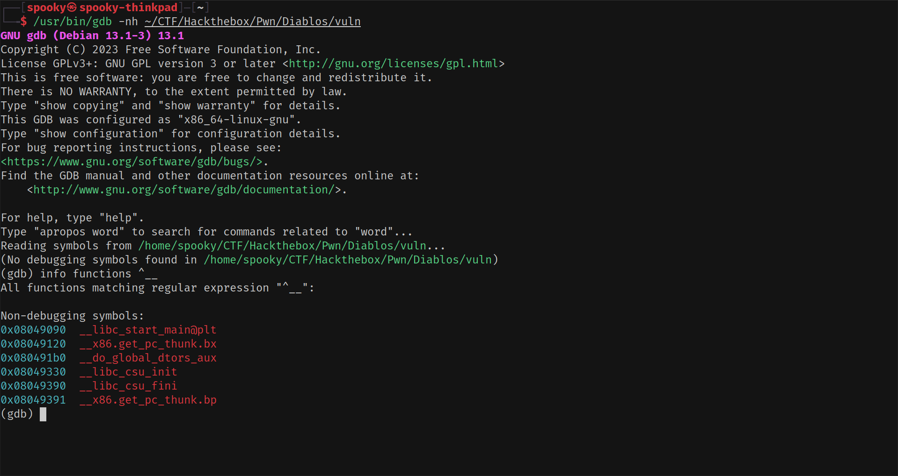
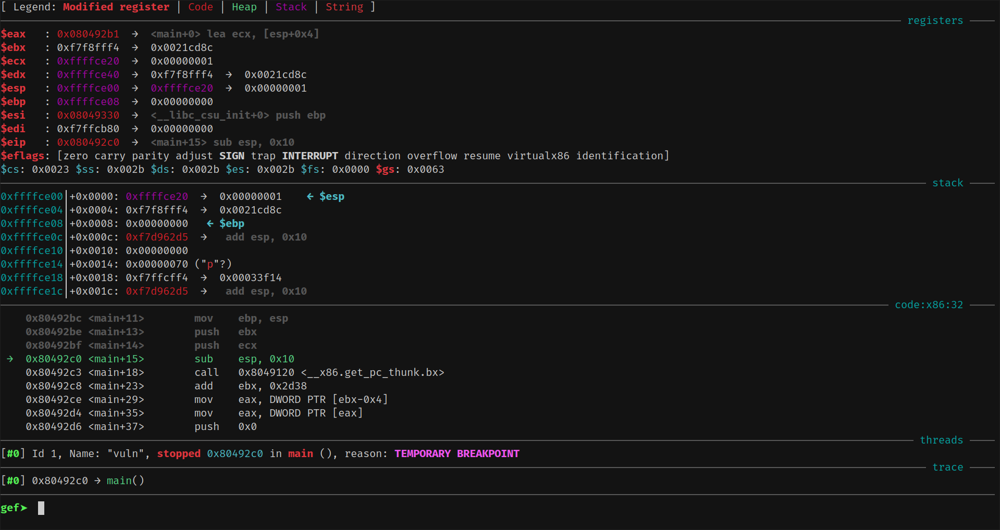

 ^ (default GDB – no extra tools, no context window, very basic)
ğŸ› ï¸ What is GDB?¶
GDB is the standard GNU debugger used by Linux developers to debug compiled applications — but for exploit developers, it’s an essential tool to reverse and break things!
🧪 Try It Yourself¶
$ gdb -q /bin/ls
(gdb) start
This opens /bin/ls in GDB and begins execution right before main().
🕹️ What’s a Debugger, Really?¶
A debugger is like a time machine for programs: You can pause, inspect, step through, or even change execution on the fly.
For exploit developers, it’s invaluable for:
- Analyzing control flow
- Watching memory in real time
- Testing and refining payloads
💣 Why GDB Matters for Exploit Devs¶
While developers use GDB to fix bugs, exploit devs use it to find them.
You’ll:
- Inspect registers and stack at crash points
- Set breakpoints to trap execution at the right time
- Craft and debug shellcode or ROP chains step by step
💉 GEF – GDB Enhanced Features¶
 ^ (GEF loaded – colorful, structured UI, context-aware)
While vanilla GDB works, it’s… minimal.
That’s where GEF (GDB Enhanced Features) comes in. It provides: - A better UI with a clear context window - Syntax highlighting and register coloring - Built-in commands for heap analysis, format string exploits, syscall tracing, and more
🚀 Installing GEF¶
Installation is super simple:
bash -c "$(curl -fsSL https://gef.blah.cat/sh)"
This script safely adds the plugin to your ~/.gdbinit so GEF loads automatically whenever you start GDB.
🧠GDB + GEF Cheatsheet¶
| 🧠Category | ğŸ› ï¸ Command | 🧾 Description |
|---|---|---|
| ▶️ Run/Control | run |
Start the program |
start |
Run and stop at main |
|
continue / c |
Resume execution | |
next / n |
Step over function calls | |
step / s |
Step into function calls | |
finish |
Run until current function returns | |
jump *0xADDR |
Set instruction pointer (skip code) | |
| 🧨 Breakpoints | break main |
Break at function |
break *0xADDR |
Break at exact address | |
info breakpoints |
List breakpoints | |
delete N |
Delete breakpoint number N | |
disable N / enable N |
Toggle breakpoint | |
| 🧠Registers | info registers |
View all registers |
set $rax = 0x1234 |
Modify register | |
| 🧬 Memory Inspection | x/32x $rsp |
View memory in hex |
x/s $rdi |
View string at address | |
x/16i $rip |
Disassemble next 16 instructions | |
x/gx 0xADDR |
View 64-bit word at address | |
x/32b 0xADDR |
Dump 32 bytes at address | |
| 🧱 Disassembly | disassemble main |
Disassemble function |
telescope $rsp |
Show memory stack layout (GEF) | |
context |
Show GEF context (registers, stack, etc) | |
| 🧩 Stack & Heap (GEF) | telescope $rbp |
View memory from frame pointer |
heap chunks |
Display heap metadata | |
dereference 0xADDR |
Show what's pointed to | |
| 🧪 Exploit Helpers | pattern create 100 |
Generate cyclic pattern |
pattern offset 0x41414141 |
Find offset in pattern | |
| 💀 Debug Info | backtrace / bt |
Show function call stack |
info frame |
Show current stack frame | |
info functions |
List functions in binary | |
info files |
Show loaded binary and its sections | |
| 📂 Arguments/Files | set args ARG1 ARG2 |
Set command-line arguments |
file ./a.out |
Load a binary | |
symbol-file ./a.out |
Load debug symbols | |
checksec |
List enabled security features |
🧠Final Tip¶
💡 Always use GDB with GEF for binary exploitation. It speeds up learning and makes debugging binaries 10x more intuitive.
If you're feeling fancy later, you can also explore: - Pwndbg – another GDB plugin with exploit dev features
Tip
🧠Mastering GDB is one of the best investments you can make as an exploit developer.